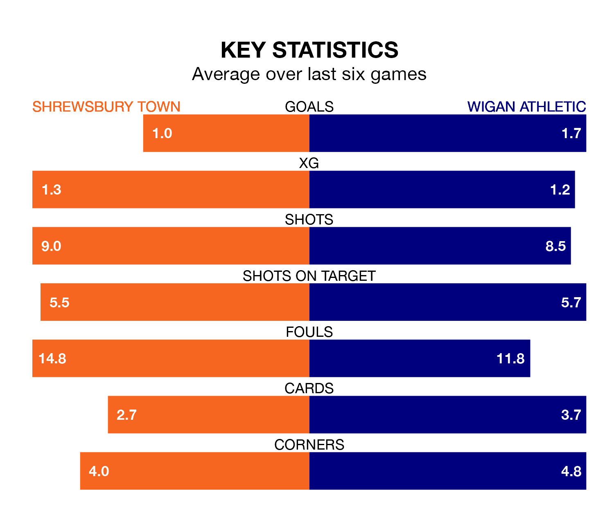

Shrewsbury Town host Wigan Athletic on Saturday at the Croud Meadow in EFL League One.
In their last league match, on Tuesday, Shrewsbury drew with Barnsley 1-1 at home, with their goal scored by Nicky Cadden (own goal).
Wigan lost, 4-2 away at Oxford United, with Jordan Jones and Thelo Aasgaard on the scoresheet.
In the last 10 years, Shrewsbury and Wigan have played each other on 10 occasions. Shrewsbury won one of them, Wigan seven, and they drew twice.
On average, the Shrews scored 0.5 goals and the Latics 1.8 in those matches.
Their last meeting was on October 28, when Wigan won 2-0 at home.
With 23 goals in 32 games so far this season, Shrewsbury are the league's lowest scorers with 0.7 goals per game. And they are conceding at an average rate, letting in 43 goals at a rate of 1.3 per game.
Wigan, meanwhile, are above average scorers, with 1.4 goals per game, compared to a league average of 1.3. They have conceded 1.3 goals per game.
Town are 19th in the table after 32 games, of which they have won 10 and drawn five, earning 35 points.
Athletic are nine places ahead of the Shrews in 10th, with 13 wins and six draws putting them on 45 points.
The home side are in disappointing form in EFL League One, with one win and two draws from their last six games.
With three wins and three losses over that period, the Latics' form is better – they have taken nine points from 18, compared to Shrewsbury's five.
Saturday's match will be refereed by Lee Swabey, who has taken charge of eight EFL League One games so far this season, issuing two red cards and booking 45 players. He has awarded two penalties.
The last Shrewsbury game Swabey refereed was a 3-0 home loss to Portsmouth on December 16. He is yet to oversee a match featuring Wigan this season.
Updated: 13:04 (UTC), 16/02/24